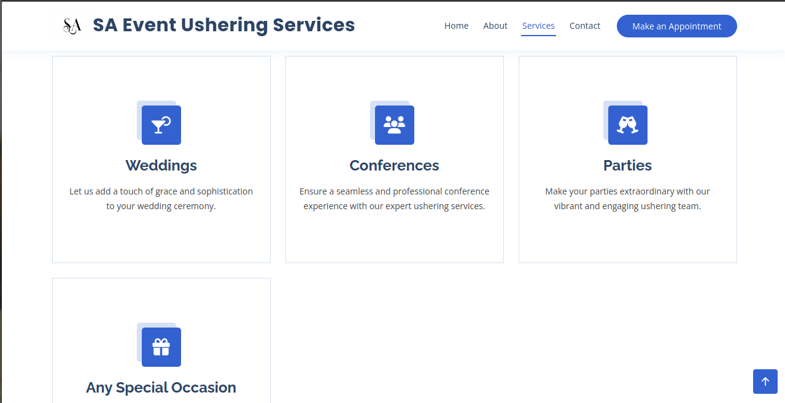

Project Overview
This project aims to perform an exploratory data analysis (EDA) on an Amazon dataset using Python and various data analytics libraries. The goal is to delve into the dataset, uncover patterns, derive insights, and present findings through visualizations and summary statistics.
To explore this dataset:
- Clone the repository: (git clone https://github.com/nickaj1/python-data-analytics-.git)
- Run Jupyter notebooks: (jupyter notebook)

This is an application to build my docker skill. The app is built with Flask on the backend and Elasticsearch is the search engine powering the searches. The front-end is built with React and the beautiful maps are courtesy of Mapbox.
To explore the application:
- Clone the repository:
(git clone https://github.com/nickaj1/foodtrucks.git)
- cd into project directory
- Run Docker Compose: (docker-compose up --build)

Introducing my DevOps project: Solution for seamless application deployment and continuous integration/continuous deployment (CI/CD) workflows. Collaborating closely with a dedicated development team, I spearheaded the containerization of our application, ensuring efficient deployment and scalability. Leveraging CI/CD pipelines, I automated the build, testing, and deployment processes, streamlining development cycles and enhancing productivity.
A key highlight of this project is the integration of webhook scripts, providing real-time feedback to developers upon making pull requests to the main branch. This proactive approach fosters collaboration and accelerates the code review process. Additionally, I implemented a Python script to send email notifications to developers, promptly notifying them of the status of their pull requests. Whether successful or encountering issues, developers receive timely updates, enabling swift resolution and iterative improvements.
With a focus on reliability, scalability, and automation, My DevOps project empowers teams to deliver high-quality software efficiently.
Introducing my Web Application Forum: Your hub for engaging discussions and sharing ideas online. This platform provides a dynamic space for users to connect, collaborate, and exchange insights on various topics. One standout feature is the ability for each person to create personalized chat rooms, enhancing the sense of community and facilitating real-time interactions. With intuitive features and a user-friendly interface, navigating discussions and contributing to conversations is seamless. Whether you're seeking advice, sharing expertise, or exploring new perspectives, this forum fosters meaningful interactions and community engagement. Join the conversation and unlock a world of knowledge with my Web Application Forum.

The Hotel Booking Application: your gateway to hassle-free travel planning. This intuitive web application allows users to effortlessly browse and reserve hotel rooms with ease. From boutique hideaways to luxurious resorts, discover accommodations tailored to your preferences. With a user-friendly interface, seamless navigation, and secure booking processes, this application ensures every travel experience is convenient and memorable. Simplify your journey and unlock a world of possibilities with my Hotel Booking Application.

Lavagna, a user-friendly and easy to use project/task tracking software. Is optimized and containerized with Docker, utilizing a three-tier architecture via Docker Compose. MySQL serves as the database, while Nginx acts as the robust proxy for seamless communication between the app and database. This setup enhances scalability and performance, ensuring efficient project management.
To explore the application:
- Clone the repository:
(git clone https://github.com/nickaj1/search-book.git)
- Run Docker Compose: (docker-compose up --build)

This web application is designed to streamline the process of booking professional ushers for various events, providing a user-friendly interface for both event organizers and service providers.
Key Features:
- Appointment Scheduling: Intuitive calendar interface for selecting dates and times for usher services.
- Automated Confirmation and Reminders: Email and SMS notifications for booking confirmations and reminders.